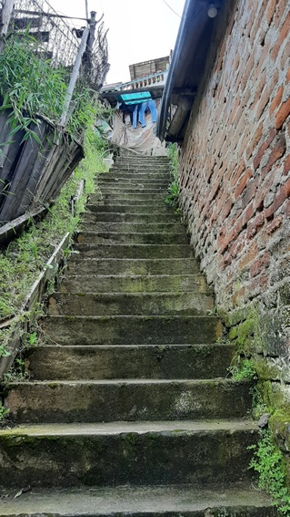
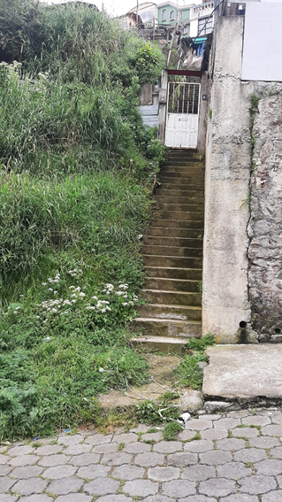
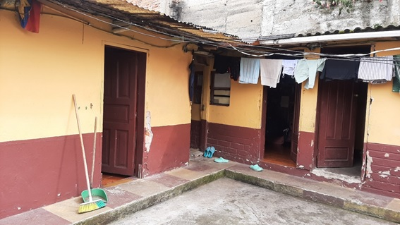
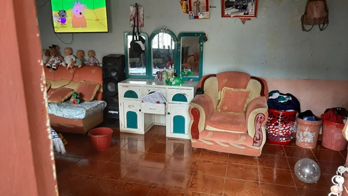
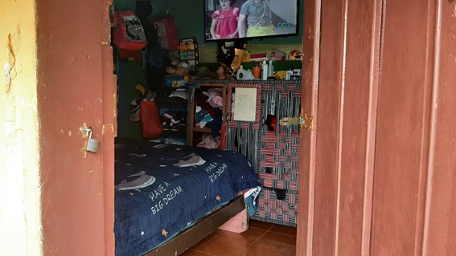
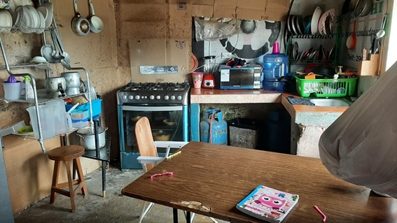

← volver al mapa
Casa - EC-RJ-154856
EC-RJ-154856 · casa · TULCAN, Carchi






Datos del remate
| Avalúo pericial | $13,110 |
| Tipo de bien | casa |
| Área de construcción | 73.37 m² |
| Área de terreno | 144.81 m² |
| Cantón / Provincia | TULCAN, Carchi |
| Dirección / Sector | CALLE 10 DE AGOSTO. calle 10 de agosto; sector urbano, perteneciente a la parroquia tulcán, cantón tulcán, provincia del carchi |
| Señalamiento | Tercer Señalamiento |
| Fecha de remate | 2026-08-20 |
| No. de proceso | 04333201800565 |
Análisis vs. mercado
Descartado del análisis automático: comparables insuficientes (3/5).
Descripción completa del avalúo
de acuerdo con el certificado del registro municipal de la propiedad y mercantil del cantón tulcán número 33460, se trata de un lote de terreno signado con el numero 3, ubicado en la calle 10 de agosto; sector urbano, perteneciente a la parroquia tulcán, cantón tulcán, provincia del carchiel terreno es de forma irregular, topografía plana con acceso inclinado, y cuya área de acuerdo al levantamiento planimétrico es de: 144.81 m2., donde encontramos una construcción de una planta.construcción una planta:estructura autosoportante.paredes ladrillo.puertas madera.ventanas hierro - madera. cubierta madera - asbesto cemento.piso cerámica - encementado.tumbado no dispone.patio pavimentado.infraestructura:la propiedad dispone de los siguientes servicios básicos:a) red de agua potable.b) red de energía eléctrica.c) red de alcantarillado.d) calle adoquinada.• el estado de las construcciones al momento de la inspección es regular.• la distribución de la construcción de una planta consta de:o tres cuartos, cocina y baño.
el terreno es de forma irregular, topografía plana con acceso inclinado, y cuya área de acuerdo al levantamiento planimétrico es de: 144.81 m2., donde encontramos una construcción de una planta. construcción una planta: estructura autosoportante. paredes ladrillo. puertas madera. ventanas hierro - madera. cubierta madera - asbesto cemento. piso cerámica - encementado. tumbado no dispone. patio pavimentado. infraestructura: la propiedad dispone de los siguientes servicios básicos: a) red de agua potable. b) red de energía eléctrica. c) red de alcantarillado. d) calle adoquinada. • el estado de las construcciones al momento de la inspección es regular. • la distribución de la construcción de una planta consta de: o tres cuartos, cocina y baño.
calle 10 de agosto; sector urbano, perteneciente a la parroquia tulcán, cantón tulcán, provincia del carchi
Límites: linderos longitud (m.) colindante norte 2.24 – 5.77 - 2.47 propiedad señora maría benavides, y graderío de ingreso respectivamente sur 4.42 – 5.74 – 2.79 propiedad señora dalila caicedo. este 1.39 – 4.61- 6.91 – 1.17 acceso peatonal, propiedad señora miriam pantoja y propiedad dalila dalila caicedo, respectivamente. oeste 10.84 propiedad señor humberto piarpuezan.
Periodo de posturas: 20/08/2026 00:00:00 a 20/08/2026 23:59:59
Dependencia jurisdiccional: UNIDAD JUDICIAL CIVIL CON SEDE EN EL CANTÓN TULCÁN, PROVINCIA DE CARCHI
Análisis de inversión
⚠ Dudosa — revisar bienEl texto indica 144.81 m² no capturados por el sistema; construcción de una planta en estado regular, con todos los servicios básicos.
A favor:
- Todos los servicios básicos
En contra:
- Área no registrada en el sistema
Análisis elaborado a partir de la descripción del avalúo — no es asesoría legal ni financiera.
Esta ficha es una copia de lo publicado en el sitio oficial de remates
judiciales de la Función Judicial del Ecuador, para consulta — no
reemplaza el expediente judicial. remates.funcionjudicial.gob.ec no da
un link propio por remate, por eso se generó esta página aparte.
Antes de ofertar, el expediente debe revisarlo un abogado.